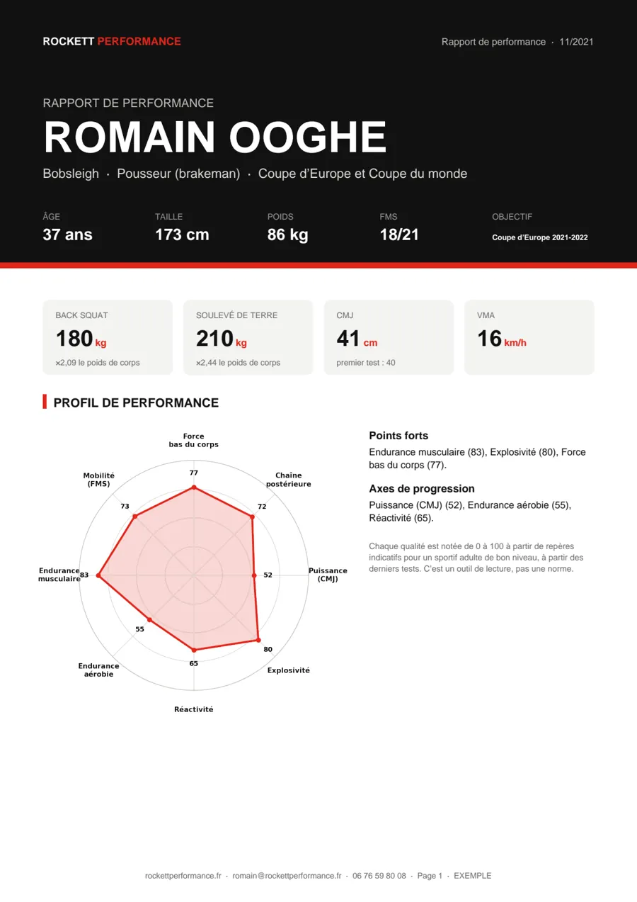
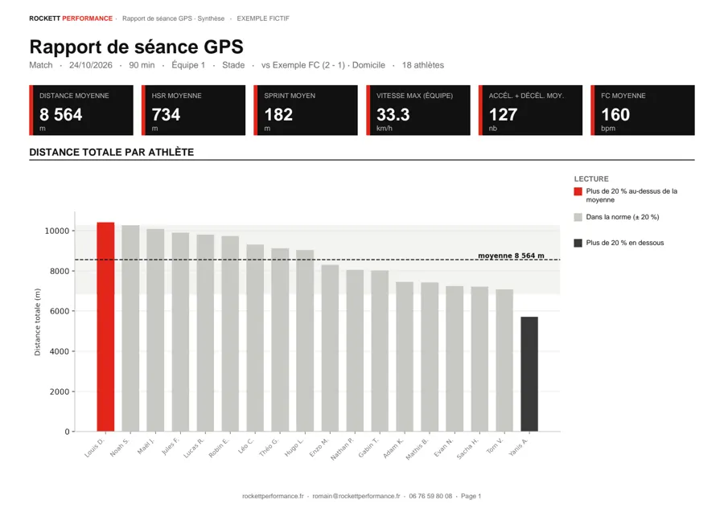

Clubs & structures
Un préparateur physique pour votre équipe
Tests de présaison, programmation, suivi de la charge, réathlétisation et préparation mentale : une méthode issue du haut niveau, au service de votre staff et de vos athlètes.
Ce que j'apporte à un staff
Cinq domaines d'intervention, toujours construits avec l'entraîneur principal et, si besoin, le staff médical.
-
Tests de présaison
Une batterie de tests standardisée pour connaître le niveau réel de chaque joueur dès la reprise, et un rapport individuel et collectif pour orienter la préparation.
- Force et puissance
- Force maximale estimée, Countermovement Jump (CMJ)
- Vitesse et agilité
- Sprint 10/30 m, test Pro-Agility 5-10-5
- Endurance
- Test progressif par paliers, seuils et zones d'effort individuelles
- Mobilité et asymétries
- Screening articulaire pour repérer les facteurs de risque de blessure
-
Programmation sur la saison
Une périodisation construite autour de vos échéances : préparation foncière, montée en charge, maintien en période de compétition, affûtage avant les rendez-vous clés.
- Séances collectives
- Contenus adaptés aux exigences physiques de votre sport
- Individualisation
- Les lacunes repérées aux tests deviennent les priorités de chaque joueur
-
Suivi de la charge
Effort ressenti, sommeil et sensations suivis après chaque séance, pour ajuster le volume et ne pas empiler la fatigue physique sur la charge technique.
-
Réathlétisation
Un retour au jeu progressif et mesuré après blessure, en relais du staff médical, avec des critères de reprise objectifs plutôt qu'au ressenti.
-
Préparation mentale
Routines d'avant-match, gestion du stress et de la pression compétitive, travail sur la confiance : des outils simples, intégrés à la préparation physique.
Trois façons de travailler ensemble
Selon vos besoins et votre budget, d'une intervention ponctuelle à une intégration complète au staff.
Intervention ponctuelle
Tests de présaison sur une ou deux journées, rapport individuel et collectif, recommandations de programmation pour votre staff.
Accompagnement de saison
Programmation complète, suivi de la charge, retests à chaque cycle et présence régulière aux entraînements.
Intégration au staff
Un poste de préparateur physique au sein de votre structure, à temps partiel ou à temps plein.
Le haut niveau, je l'ai vécu de l'intérieur : comme athlète, comme coach, et comme enseignant.
-
Athlète de haut niveau
Football américain au Pôle France d'Amiens puis avec les London Blitz en championnat d'Europe, pousseur en Coupe d'Europe de bobsleigh 2021-2022 avec une équipe française en lice pour les JO de Pékin.
-
STAPS et 4 diplômes universitaires
Préparation physique et réathlétisation, ingénierie de la haute performance sportive, nutrition du sportif, préparation mentale.
-
Encadrement et pédagogie
4 ans de direction et de programmation à la tête de CrossFit Pornic, avec des athlètes de tous niveaux, et des cours de préparation mentale à l'EDNH Nantes.
-
Athlètes en compétition
Préparation d'athlètes vers des championnats nationaux et des compétitions internationales, en coordination avec leurs entraîneurs.
Ce que reçoit votre staff
Des rapports clairs, pour l’athlète comme pour l’entraîneur : profil de chaque joueur, progression entre les tests, charge de chaque séance. Un exemple réel de périodisation est aussi disponible.

Athlètes et compétiteurs Le rapport de performance L’analyse complète : force, profil force-vitesse, courbe de puissance, réactivité, capacités énergétiques. Ici, les vrais tests de Romain en équipe de France de bobsleigh. Voir l’exemple (PDF) →
Pour le staff Le rapport de séance GPS Volume, haute intensité, sprints, accélérations : la charge de chaque joueur, les points de vigilance et un profil par athlète. Voir l’exemple (PDF) →Le rapport de performance présente les vrais tests de Romain (équipe de France de bobsleigh, 2018-2021). Le rapport GPS est un exemple fictif.
Parlons de votre saison.
Présentez-moi votre club, votre calendrier et vos besoins : je vous réponds sous 24 h avec une proposition sur mesure. Tarifs sur devis.
Me contacter 06 76 59 80 08